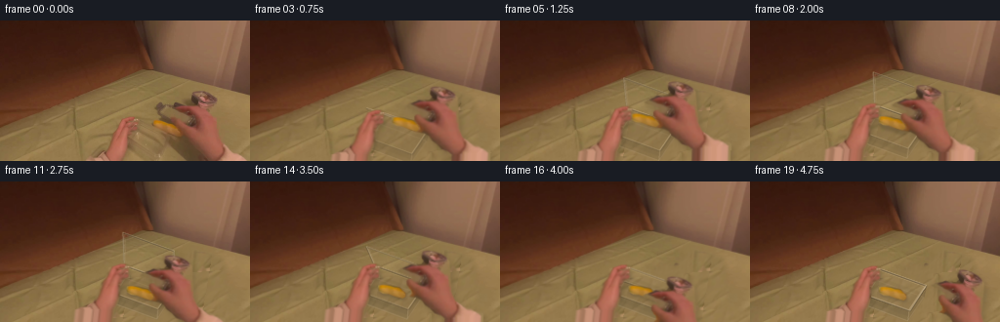
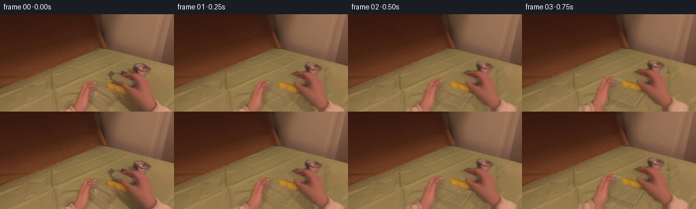

CODING AGENTS AS PIXEL WORLD MODELS
traex/GPT-6.1-Sol · common50_0013
点击播放 · 原生 RGB 像素
逐轮保存的候选
回放视频、检查图与代码变化。
每份候选均可单独播放。实际图片检查记录在下方工具轨迹中。
候选 01播放与检查图
点击播放 · 原生 RGB 像素

展开代码变化
--- 上一保存版本
+++ 本次保存版本
@@ -0,0 +1,276 @@
+"""A deterministic, source-pixel, egocentric manipulation animation.
+Only the supplied RGB still supplies photographic material; geometry supplies
+clear plastic, its refraction, and the lid/hand trajectories.
+"""
+from pathlib import Path
+import numpy as np
+from PIL import Image, ImageDraw, ImageFilter
+import cv2
+from scipy.ndimage import gaussian_filter, distance_transform_edt
+import artifact_io
+
+ROOT = Path(__file__).resolve().parent
+W,H = 256,144
+S = 3
+rng = np.random.default_rng(131)
+I = np.asarray(Image.open(ROOT/'first_frame.png').convert('RGB')).astype(np.float32)
+Y,X = np.mgrid[:H,:W].astype(np.float32)
+
+def polygon_mask(points, feather=.45):
+ im=Image.new('L',(W*S,H*S),0)
+ ImageDraw.Draw(im).polygon([(round(x*S),round(y*S)) for x,y in points],fill=255)
+ m=np.array(im.resize((W,H),Image.Resampling.LANCZOS)).astype(np.float32)/255
+ if feather: m=gaussian_filter(m,feather)
+ return np.clip(m,0,1)
+
+LEFT=[(87,144),(98,139),(106,136),(110,128),(114,117),(119,110),(121,102),
+ (127,100),(132,98),(138,98),(142,101),(140,104),(141,109),(140,112),
+ (134,115),(132,122),(132,129),(130,136),(126,144)]
+RIGHT=[(195,72),(201,72),(209,74),(216,77),(220,80),(224,85),
+ (224,99),(224,117),(227,126),(235,132),(248,137),(256,141),(256,144),
+ (216,144),(212,140),(205,137),(201,132),(196,128),(193,123),(188,120),
+ (180,118),(175,116),(177,112),(181,109),(179,106),(179,102),
+ (181,100),(186,100),(184,98),(181,96),(176,94),(172,93),(170,91),
+ (174,89),(181,87),(185,85),(195,86),(198,83),(196,80),(194,77)]
+BREAD=[(156,102),(162,101.7),(168,103),(174,105),(178,106),(180,109),
+ (183,112),(183,116),(180,118),(174,116),(166,112),(160,111),(156,108),(155.7,105)]
+ml=polygon_mask(LEFT,.38)
+mr=polygon_mask(RIGHT,.42)
+mb=polygon_mask(BREAD,.35)
+# Do not duplicate the morsel in the gripping hand.
+mr=mr*(1-mb)
+
+# Countertop uncovered by the two hands is filled with actual nearby wood pixels.
+# The grain comes from the unoccluded lower-left tabletop, not a learned prior.
+tex=I[111:144,17:101]
+lo=gaussian_filter(tex,(3,5,0))
+detail=tex-lo
+# Repeat a photographed texture with gently changing phase to avoid obvious seams.
+u=(X*1.03+Y*.17+13)% (detail.shape[1]-1)
+v=(Y*.81+X*.07+7)% (detail.shape[0]-1)
+td=cv2.remap(detail,u.astype(np.float32),v.astype(np.float32),cv2.INTER_LINEAR,borderMode=cv2.BORDER_REFLECT)
+base=np.empty_like(I)
+base[:,:,0]=146.5 + .10*(Y-106)+.007*(X-156)
+base[:,:,1]=120.5 + .07*(Y-106)+.007*(X-156)
+base[:,:,2]=75.8 + .045*(Y-106)+.004*(X-156)
+base += td*.90
+# Broad source cast-shadow and container footprint, including the wrist shadows.
+foot=[(122,97),(144,97),(157,100),(182,110),(190,120),(207,141),(206,144),
+ (91,144),(110,130),(114,112)]
+rightshadow=[(157,82),(167,82),(180,86),(193,73),(213,71),(230,81),(232,123),
+ (255,137),(256,144),(183,144),(173,120),(158,107)]
+mfoot=polygon_mask(foot,1.1)
+mshadow=polygon_mask(rightshadow,2.4)
+remove=np.maximum.reduce([ml,mr,mb,mfoot,mshadow])
+# Feather the infilled surface while preserving the cabinet/countertop boundary.
+remove=np.clip(gaussian_filter(remove,1.3)*1.16,0,1)
+BG=I*(1-remove[:,:,None])+base*remove[:,:,None]
+
+# High resolution drawing for small, photographic clear-plastic edges.
+def draw_layer(polys=(), lines=()):
+ lay=Image.new('RGBA',(W*S,H*S),(0,0,0,0)); d=ImageDraw.Draw(lay)
+ for pts,col in polys:
+ d.polygon([(float(x)*S,float(y)*S) for x,y in pts],fill=tuple(col))
+ for pts,col,width in lines:
+ d.line([(float(x)*S,float(y)*S) for x,y in pts], fill=tuple(col),width=max(1,round(width*S)),joint='curve')
+ ar=np.array(lay.resize((W,H),Image.Resampling.LANCZOS)).astype(np.float32)
+ return ar[:,:,:3],ar[:,:,3]/255
+
+def composite(im,rgb,a):
+ return im*(1-a[:,:,None])+rgb*a[:,:,None]
+
+def smooth(t):
+ t=np.clip(t,0,1);return t*t*(3-2*t)
+
+def curve(i,keys):
+ for j in range(len(keys)-1):
+ a,va=keys[j];b,vb=keys[j+1]
+ if i<=b:
+ f=smooth((i-a)/(b-a));return np.array(va)*(1-f)+np.array(vb)*f
+ return np.array(keys[-1][1])
+
+def affine(cx,cy,dx,dy,angle=0,scale=1):
+ a=np.deg2rad(angle);c,s=np.cos(a)*scale,np.sin(a)*scale
+ return np.array([[c,-s,cx+dx-c*cx+s*cy],[s,c,cy+dy-s*cx-c*cy]],np.float32)
+
+def warp_layer(rgb,mask,M,stretch=True):
+ inv=cv2.invertAffineTransform(M)
+ sx=inv[0,0]*X+inv[0,1]*Y+inv[0,2]
+ sy=inv[1,0]*X+inv[1,1]*Y+inv[1,2]
+ if stretch:
+ # Continue the forearm below the camera crop using its last photographed
+ # scanlines. This avoids an artificial horizontal wrist termination.
+ extra=np.maximum(sy-143,0)
+ sx=sx+.12*extra
+ rgbout=cv2.remap(rgb,sx,sy,cv2.INTER_LINEAR,borderMode=cv2.BORDER_REPLICATE)
+ a=cv2.remap(mask,sx,sy,cv2.INTER_LINEAR,borderMode=cv2.BORDER_REPLICATE if stretch else cv2.BORDER_CONSTANT)
+ a*=((sx>=0)&(sx<=255)&(sy>=0))
+ return rgbout,np.clip(a,0,1)
+
+def shadow(im,mask,opacity=.16,off=(2,3),blur=2):
+ sh=cv2.warpAffine(mask,np.array([[1,0,off[0]],[0,1,off[1]]],np.float32),(W,H))
+ sh=gaussian_filter(sh,blur)*opacity
+ return im*(1-sh[:,:,None])
+
+# Container in the still: rear long edge, right short edge, near long edge.
+Q=np.array([[136,100],[186,118],[169,143],[120,125]],np.float32)
+
+def box_coords(i):
+ move=curve(i,[(0,(0,0,1)),(5,(-6,-10,1.035)),(9,(-8,-13,1.055)),
+ (13,(-8,-13,1.055)),(19,(-7,-11,1.045))])
+ center=np.array([153,121],np.float32)
+ return (Q-center)*move[2]+center+move[:2], move
+
+def glass_box(im,q,amount=1):
+ a,b,c,d=q
+ # Slightly narrowing bottom corners distinguish the bowl from the flat lid.
+ bottom=(q-q.mean(0))*.925+q.mean(0)+np.array([.1,11.4])
+ aa,bb,cc,dd=bottom
+ topmask=polygon_mask(q,.45)
+ # A dimmer base and very modest refraction make the empty volume transparent.
+ basequad=(q-q.mean(0))*.91+q.mean(0)+[0,7]
+ basem=polygon_mask(basequad,.5)
+ walls=polygon_mask([d,c,cc,dd],.6)
+ side=polygon_mask([b,c,cc,bb],.6)
+ xx=X+.45*walls-.45*side
+ yy=Y-.8*walls-.55*side
+ sampled=cv2.remap(im,xx.astype('float32'),yy.astype('float32'),cv2.INTER_LINEAR,borderMode=cv2.BORDER_REFLECT)
+ weight=(.15*topmask+.42*walls+.32*side)*amount
+ refract=sampled*np.array([.99,1.005,1.05],np.float32)
+ im=composite(im,refract,np.clip(weight,0,.55))
+ im=im*(1-(.042*basem+.065*walls+.075*side)[:,:,None]*amount)
+ # Outer moulded rim: two dark bevels and a narrow warm highlight.
+ lines=[]
+ lines.append((list(q)+[a],(70,58,41,round(83*amount)),1.35))
+ lines.append((list(q-np.array([0,.6]))+[a-np.array([0,.6])],(211,186,145,round(130*amount)),.70))
+ qi=(q-q.mean(0))*.955+q.mean(0)+[0,.55]
+ lines.append((list(qi)+[qi[0]],(216,191,151,round(76*amount)),.50))
+ # Rear wall and the bottom seam are fainter through the transparent vessel.
+ lines.extend([([aa,bb,cc,dd,aa],(199,171,130,round(56*amount)),.58),
+ ([d,dd],(226,200,159,round(107*amount)),.66),
+ ([c,cc],(216,187,141,round(108*amount)),.62),
+ ([b,bb],(85,72,47,round(69*amount)),.60),
+ ([dd,cc],(214,183,138,round(89*amount)),.66),
+ ([a,aa],(205,180,138,round(39*amount)),.45)])
+ # Small highlights on rounded corners, not large opaque outlines.
+ for p,v in [(d,c-d),(b,c-b),(a,b-a)]:
+ v=v/np.linalg.norm(v)
+ lines.append(([p+v*1.4,p+v*5],(239,213,173,round(144*amount)),.68))
+ rgb,ma=draw_layer(lines=lines)
+ return composite(im,rgb,ma), (walls,side,basem)
+
+def lid_points(q,theta):
+ a,b,c,d=q
+ # Fold the detachable lid back around its long rear edge. Vertical screen
+ # displacement is the projected depth of a real rigid plate.
+ angle=np.deg2rad(theta)
+ v=(d-a)*np.cos(angle)+np.array([0,-35])*np.sin(angle)
+ return np.array([a,b,b+v,a+v],np.float32)
+
+def glass_lid(im,q,theta,amount=1):
+ p=lid_points(q,theta);a,b,c,d=p
+ mask=polygon_mask(p,.4)
+ # Light transmission plus a broad, weak reflection from overhead lighting.
+ gl=im.copy()
+ gl=gl*.954+np.array([174,152,117])*.046
+ u=X-p[:,0].mean();v=Y-p[:,1].mean()
+ shine=np.exp(-((u+.4*v)/31)**2-(v/21)**2)
+ gl+=shine[:,:,None]*np.array([6,6,5])
+ im=composite(im,gl,mask*amount*.74)
+ op=amount
+ inner=(p-p.mean(0))*.94+p.mean(0)
+ lines=[(list(p)+[a],(67,57,41,round(120*op)),1.35),
+ (list(p-np.array([0,.5]))+[a-np.array([0,.5])],(222,199,162,round(147*op)),.68),
+ (list(inner)+[inner[0]],(183,157,122,round(105*op)),.64)]
+ # Lip protruding in the upper-right corner; it is what the fingertips pull.
+ lip=np.array([b,c])
+ if theta>10:
+ center=(b+c)/2
+ v=(c-b);v=v/(np.linalg.norm(v)+1e-4)
+ normal=np.array([v[1],-v[0]])
+ pts=[center-v*3,center-v*3+normal*2.2,center+v*3+normal*2.2,center+v*3]
+ lines.append((pts,(218,193,155,round(145*op)),.8))
+ rgb,ma=draw_layer(lines=lines)
+ return composite(im,rgb,ma)
+
+# Bread uses original crumb/crust values, and is color-restored just a little
+# as the morsel leaves the original hand's heavy shadow.
+bread_rgb=I.copy()
+bread_yellow=np.clip((I[:,:,1]-I[:,:,2]-34)/35,0,1)
+warm=(np.array([10,13,-2],np.float32)[None,None,:]*mb[:,:,None])
+bread_rgb+=warm
+# The underface remains toasted, with only a subtle golden diffuse contribution.
+bread_rgb+=mb[:,:,None]*(1-bread_yellow[:,:,None])*np.array([9,10,-3])
+
+frames=[]
+for i in range(20):
+ if i==0:
+ frames.append(I.astype(np.uint8));continue
+ q,mov=box_coords(i)
+ dx,dy,sc=mov
+ ML=affine(153,121,dx,dy,0,sc)
+ left,al=warp_layer(I,ml,ML)
+ # Wrist and finger image deformation is kept modest, so the result is a real
+ # human hand rather than a drawn mesh or synthetic hand silhouette.
+ hx,hy,ha=curve(i,[(0,(0,0,0)),(2,(-6,-4,-2)),(5,(-20,-12,-5)),
+ (7,(-22,-11,-4)),(10,(-25,1,-3)),(11,(-25,2,-3)),
+ (12,(-14,-8,-3)),(13,(-9,-13,-3)),(14,(-17,-3,-4)),
+ (16,(-23,24,-3)),(17,(-21,33,-2)),(18,(-7,30,2)),(19,(12,19,5))])
+ MR=affine(218,128,hx,hy,ha,1)
+ right,ar=warp_layer(I,mr,MR)
+ # Before release the bread and pinch move as one rigid grasp.
+ if i<=11:
+ BM=MR.copy()
+ else:
+ BM=affine(169,110,-24.5,3,-5,1)
+ # The vessel's tiny final settling moves the inserted morsel too.
+ BM[0,2]+=dx+8;BM[1,2]+=dy+13
+ bread,ab=warp_layer(bread_rgb,mb,BM,False)
+ # Vessel moves independently from the static tabletop beneath it.
+ objamount=min(1,i/3.5)
+ im=BG.copy()
+ # In the first few frames keep the original faint plastic/shadow evidence,
+ # but not the source hands, for an unobtrusive transition out of frame zero.
+ if objamount<1:
+ clear=(mfoot*(1-ml)*(1-mr)*(1-mb))*(1-objamount)*.66
+ im=composite(im,I,clear)
+ im=shadow(im,al,.13,(2,3),2)
+ im=shadow(im,ar,.12,(3,4),3)
+ # Photographed bread casts a soft contact shadow upon the bottom of the bowl.
+ if i>=8:
+ im=shadow(im,ab,.16,(1,5 if i<11 else 2),1.3)
+ # Draw the bowl behind fingers, then contents, then its refractive near wall.
+ im,_=glass_box(im,q,objamount)
+ theta=float(curve(i,[(0,(0,)),(1,(8,)),(3,(40,)),(5,(80,)),(7,(86,)),
+ (12,(86,)),(13,(79,)),(14,(62,)),(16,(23,)),(17,(0,)),(19,(0,))])[0])
+ # Open lid is behind the grasp and bowl; closed lid covers the bread after release.
+ if theta>18:
+ im=glass_lid(im,q,theta,objamount)
+ im=composite(im,bread,ab)
+ # The inserted loaf is seen through the clear front side rather than on top
+ # of it. Its golden edge and texture are not erased.
+ if i>=10:
+ wall=polygon_mask([q[3],q[2],q[2]+[0,11],q[3]+[0,11]],.6)
+ im=composite(im,im*np.array([.94,.97,1.02]),wall*.5)
+ im=composite(im,left,al)
+ im=composite(im,right,ar)
+ if theta<=18:
+ # The rim can occlude only the content, not the hand pressing the latch.
+ closed=glass_lid(im,q,theta,objamount)
+ protect=np.clip(al+ar,0,1)
+ im=closed*(1-protect[:,:,None])+im*protect[:,:,None]
+ # Reassert a glint where the supporting left fingertips wrap the near rim.
+ if i>=3:
+ p=q[0];end=p+(q[1]-p)*.095
+ rgb,aa=draw_layer(lines=[([p,end],(224,197,156,80),.6)])
+ im=composite(im,rgb,aa*(1-ar))
+ # Natural egocentric breathing, subpixel and continuous, applied uniformly.
+ jitterx=.30*np.sin(i*.49);jittery=.22*np.sin(i*.31)
+ im=cv2.warpAffine(im,np.array([[1,0,jitterx],[0,1,jittery]],np.float32),(W,H),flags=cv2.INTER_LINEAR,borderMode=cv2.BORDER_REFLECT)
+ frames.append(np.clip(im,0,255).astype(np.uint8))
+frames=np.stack(frames)
+artifact_io.save(frames,ROOT)
+# Numeric checks used when visual image tools are unavailable.
+assert frames.shape==(20,144,256,3)
+assert np.array_equal(frames[0],np.asarray(Image.open(ROOT/'first_frame.png').convert('RGB')))
+print('Saved RGB frames:',frames.shape,'mean motion',np.mean(np.abs(np.diff(frames.astype(float),axis=0)),axis=(1,2,3)).round(2).tolist())
候选 02播放与检查图
点击播放 · 原生 RGB 像素


展开代码变化
--- 上一保存版本
+++ 本次保存版本
@@ -33,7 +33,7 @@
(181,100),(186,100),(184,98),(181,96),(176,94),(172,93),(170,91),
(174,89),(181,87),(185,85),(195,86),(198,83),(196,80),(194,77)]
BREAD=[(156,102),(162,101.7),(168,103),(174,105),(178,106),(180,109),
- (183,112),(183,116),(180,118),(174,116),(166,112),(160,111),(156,108),(155.7,105)]
+ (182,112),(182,115),(178,115),(172,112),(164,110),(158,109),(156,106)]
ml=polygon_mask(LEFT,.38)
mr=polygon_mask(RIGHT,.42)
mb=polygon_mask(BREAD,.35)
@@ -222,10 +222,14 @@
if i<=11:
BM=MR.copy()
else:
- BM=affine(169,110,-24.5,3,-5,1)
- # The vessel's tiny final settling moves the inserted morsel too.
- BM[0,2]+=dx+8;BM[1,2]+=dy+13
- bread,ab=warp_layer(bread_rgb,mb,BM,False)
+ # Retain the exact last photographed pinch pose upon release, then
+ # settle the morsel downward into the bowl without an x-position pop.
+ BM=affine(218,128,-25,2,-3,1)
+ fall=smooth((i-11)/2)
+ BM[0,2]+=.45*fall+dx+8
+ BM[1,2]+=1.55*fall+dy+13
+ breadtone=I+(bread_rgb-I)*smooth(i/4)
+ bread,ab=warp_layer(breadtone,mb,BM,False)
# Vessel moves independently from the static tabletop beneath it.
objamount=min(1,i/3.5)
im=BG.copy()
候选 03播放与检查图
可观测工具轨迹
实际执行的命令与返回图片。
命令 1exit 0
/bin/bash -lc 'ls -la; cat prompt.txt; cat GENERATION_RULES.md'
命令 2exit 0
/bin/bash -lc "cat task_spec.json; cat artifact_io.py; python - <<'PY'
from PIL import Image
import numpy as np
im=np.array(Image.open('first_frame.png').convert('RGB'))
print(im.shape)
# RGB nearest semantic palette ascii
p=np.array([[230,230,230],[180,180,180],[110,110,110],[40,40,40],[150,100,70],[215,160,110],[240,206,80],[100,150,200],[60,85,60],[230,205,185]])
ch=list(' .:#bsyBgS')
a=np.array(Image.fromarray(im).resize((85,48)))
d=((a[:,:,None,:].astype(float)-p[None,None,:,:])**2).sum(-1)
for row in d.argmin(-1):print(''.join(ch[x] for x in row))
print('coarse RGB')
a=np.array(Image.fromarray(im).resize((16,9)))
for y in range(9):print(y,a[y].tolist())
PY"命令 3exit 0
/bin/bash -lc "python - <<'PY'
from PIL import Image
import numpy as np
im=np.array(Image.open('first_frame.png')).astype(float)
for name,a in [('lum',im.mean(2)),('skin',im[:,:,0]-im[:,:,1]),('yellow',im[:,:,1]-im[:,:,2])]:
a=np.array(Image.fromarray(a.astype(np.float32)).resize((128,72)))
lo,hi=np.percentile(a,[2,98]); a=np.clip((a-lo)/(hi-lo),0,.999)
ch=' .,:;irsXA253hMHGS#9B&@'
print(name,lo,hi)
for row in a:print(''.join(ch[int(x*len(ch))] for x in row))
PY"命令 4exit 0
/bin/bash -lc "python - <<'PY'
from PIL import Image
import numpy as np
im=np.array(Image.open('first_frame.png')).astype(float)
crop=im[74:144,96:244]
a=np.array(Image.fromarray(crop.mean(2).astype('float32')).resize((111,53)))
ch=' .:-=+*#%@';lo,hi=65,160
print('x96..244 y74..144 luminance')
for row in np.clip((a-lo)/(hi-lo),0,.999):print(''.join(ch[int(x*len(ch))] for x in row))
# skin pixels detected
mask=(im[:,:,0]-im[:,:,1]>45)&(im[:,:,1]-im[:,:,2]<39)
print('skin by rows:')
for y in range(75,144,3):
s=np.flatnonzero(mask[y]); bounds=np.r_[0,np.flatnonzero(np.diff(s)>1)+1,len(s)]
print(y,[(int(s[bounds[i]]),int(s[bounds[i+1]-1])) for i in range(len(bounds)-1) if bounds[i+1]-bounds[i]>1])
print('RGB in objects (every 4 pixels)')
for y in range(78,144,4):
print(y,' '.join('%d:%d/%d/%d'%(x,*im[y,x]) for x in range(100,233,8)))
PY"命令 5exit 0
/bin/bash -lc "python - <<'PY'
from PIL import Image
import numpy as np
im=np.array(Image.open('first_frame.png')).astype(float)
for name,mask in [('mustard',(im[:,:,1]-im[:,:,2]>55)&(im[:,:,0]-im[:,:,1]>25)),('spec',(im.mean(2)>133)),('skin',(im[:,:,0]-im[:,:,1]>50)&(im[:,:,1]-im[:,:,2]<40))]:
print(name)
for y in range(72,144):
s=np.flatnonzero(mask[y]);s=s[s>90];b=np.r_[0,np.flatnonzero(np.diff(s)>1)+1,len(s)]
ls=[(int(s[b[i]]),int(s[b[i+1]-1])) for i in range(len(b)-1) if b[i+1]-b[i]>=2]
if ls: print(y,ls)
print('crop categorical x110-229 y80-143; . table, s skin, y mustard, * reflection, # dark')
for y in range(80,144):
st=''
for x in range(110,230):
r,g,b=im[y,x]; lum=(r+g+b)/3
c='.'
if g-b>58 and r-g>25:c='Y'
elif r-g>50 and g-b<40:c='s'
elif r-g>40 and g-b<32:c='h'
elif lum>133:c='*'
elif lum>120:c='+'
elif lum<61:c='#'
elif lum<78:c=':'
elif lum<94:c='-'
st+=c
print('%3d '%y+st)
PY"命令 6exit 0
/bin/bash -lc "python - <<'PY'
import numpy as np
from PIL import Image
im=np.array(Image.open('first_frame.png')).astype(float)
a=im[70:127,110:224]
l=a.mean(2); grad=np.sqrt(((a[1:-1,2:]-a[1:-1,:-2])**2).sum(2)+((a[2:,1:-1]-a[:-2,1:-1])**2).sum(2))
print('edges x111-223 y71-126')
ch=' .,:;irsXA2#@'
for y,row in enumerate(grad):print('%3d '%(y+71)+''.join(ch[min(int(x/12),len(ch)-1)] for x in row))
# local RGB categorization hue into body (s) and clear (d) and yellow Y; zoom 2? raw useful
print('raw luminance x120..202 y82..121')
ch=' .:-=+*#%@'
l=im[82:122,120:202].mean(2)
for y,row in enumerate(l):print('%3d '%(y+82)+''.join(ch[min(max(int((x-45)/13),0),9)] for x in row))
PY"命令 7exit 0
/bin/bash -lc "python - <<'PY'
from PIL import Image
import numpy as np
im=np.array(Image.open('first_frame.png')).astype(float)
# full lower table luminosity precise 1 pixel step binned
print('x90..225 y65..144 (one character per px) hue r-g; .=neutral/table; orange digit; skin S; yellow Y')
for y in range(65,144,1):
st=''
for x in range(90,225):
r,g,b=im[y,x];d=r-g;e=g-b
if e>58:c='Y'
elif d>65:c='S'
elif d>50:c='s'
elif d>40:c='o'
elif d>33:c=','
elif d>27:c='.'
elif d>20:c=' '
else:c=':'
st+=c
print('%3d '%y+st)
PY"命令 8exit 0
/bin/bash -lc "python - <<'PY' import importlib.util for m in ['cv2','scipy']:print(m, bool(importlib.util.find_spec(m))) PY"
命令 9exit 0
/bin/bash -lc "cat > generate.py <<'PY'
\"\"\"A deterministic, source-pixel, egocentric manipulation animation.
Only the supplied RGB still supplies photographic material; geometry supplies
clear plastic, its refraction, and the lid/hand trajectories.
\"\"\"
from pathlib import Path
import numpy as np
from PIL import Image, ImageDraw, ImageFilter
import cv2
from scipy.ndimage import gaussian_filter, distance_transform_edt
import artifact_io
ROOT = Path(__file__).resolve().parent
W,H = 256,144
S = 3
rng = np.random.default_rng(131)
I = np.asarray(Image.open(ROOT/'first_frame.png').convert('RGB')).astype(np.float32)
Y,X = np.mgrid[:H,:W].astype(np.float32)
def polygon_mask(points, feather=.45):
im=Image.new('L',(W*S,H*S),0)
ImageDraw.Draw(im).polygon([(round(x*S),round(y*S)) for x,y in points],fill=255)
m=np.array(im.resize((W,H),Image.Resampling.LANCZOS)).astype(np.float32)/255
if feather: m=gaussian_filter(m,feather)
return np.clip(m,0,1)
LEFT=[(87,144),(98,139),(106,136),(110,128),(114,117),(119,110),(121,102),
(127,100),(132,98),(138,98),(142,101),(140,104),(141,109),(140,112),
(134,115),(132,122),(132,129),(130,136),(126,144)]
RIGHT=[(195,72),(201,72),(209,74),(216,77),(220,80),(224,85),
(224,99),(224,117),(227,126),(235,132),(248,137),(256,141),(256,144),
(216,144),(212,140),(205,137),(201,132),(196,128),(193,123),(188,120),
(180,118),(175,116),(177,112),(181,109),(179,106),(179,102),
(181,100),(186,100),(184,98),(181,96),(176,94),(172,93),(170,91),
(174,89),(181,87),(185,85),(195,86),(198,83),(196,80),(194,77)]
BREAD=[(156,102),(162,101.7),(168,103),(174,105),(178,106),(180,109),
(183,112),(183,116),(180,118),(174,116),(166,112),(160,111),(156,108),(155.7,105)]
ml=polygon_mask(LEFT,.38)
mr=polygon_mask(RIGHT,.42)
mb=polygon_mask(BREAD,.35)
# Do not duplicate the morsel in the gripping hand.
mr=mr*(1-mb)
# Countertop uncovered by the two hands is filled with actual nearby wood pixels.
# The grain comes from the unoccluded lower-left tabletop, not a learned prior.
tex=I[111:144,17:101]
lo=gaussian_filter(tex,(3,5,0))
detail=tex-lo
# Repeat a photographed texture with gently changing phase to avoid obvious seams.
u=(X*1.03+Y*.17+13)% (detail.shape[1]-1)
v=(Y*.81+X*.07+7)% (detail.shape[0]-1)
td=cv2.remap(detail,u.astype(np.float32),v.astype(np.float32),cv2.INTER_LINEAR,borderMode=cv2.BORDER_REFLECT)
base=np.empty_like(I)
base[:,:,0]=146.5 + .10*(Y-106)+.007*(X-156)
base[:,:,1]=120.5 + .07*(Y-106)+.007*(X-156)
base[:,:,2]=75.8 + .045*(Y-106)+.004*(X-156)
base += td*.90
# Broad source cast-shadow and container footprint, including the wrist shadows.
foot=[(122,97),(144,97),(157,100),(182,110),(190,120),(207,141),(206,144),
(91,144),(110,130),(114,112)]
rightshadow=[(157,82),(167,82),(180,86),(193,73),(213,71),(230,81),(232,123),
(255,137),(256,144),(183,144),(173,120),(158,107)]
mfoot=polygon_mask(foot,1.1)
mshadow=polygon_mask(rightshadow,2.4)
remove=np.maximum.reduce([ml,mr,mb,mfoot,mshadow])
# Feather the infilled surface while preserving the cabinet/countertop boundary.
remove=np.clip(gaussian_filter(remove,1.3)*1.16,0,1)
BG=I*(1-remove[:,:,None])+base*remove[:,:,None]
# High resolution drawing for small, photographic clear-plastic edges.
def draw_layer(polys=(), lines=()):
lay=Image.new('RGBA',(W*S,H*S),(0,0,0,0)); d=ImageDraw.Draw(lay)
for pts,col in polys:
d.polygon([(float(x)*S,float(y)*S) for x,y in pts],fill=tuple(col))
for pts,col,width in lines:
d.line([(float(x)*S,float(y)*S) for x,y in pts], fill=tuple(col),width=max(1,round(width*S)),joint='curve')
ar=np.array(lay.resize((W,H),Image.Resampling.LANCZOS)).astype(np.float32)
return ar[:,:,:3],ar[:,:,3]/255
def composite(im,rgb,a):
return im*(1-a[:,:,None])+rgb*a[:,:,None]
def smooth(t):
t=np.clip(t,0,1);return t*t*(3-2*t)
def curve(i,keys):
for j in range(len(keys)-1):
a,va=keys[j];b,vb=keys[j+1]
if i<=b:
f=smooth((i-a)/(b-a));return np.array(va)*(1-f)+np.array(vb)*f
return np.array(keys[-1][1])
def affine(cx,cy,dx,dy,angle=0,scale=1):
a=np.deg2rad(angle);c,s=np.cos(a)*scale,np.sin(a)*scale
return np.array([[c,-s,cx+dx-c*cx+s*cy],[s,c,cy+dy-s*cx-c*cy]],np.float32)
def warp_layer(rgb,mask,M,stretch=True):
inv=cv2.invertAffineTransform(M)
sx=inv[0,0]*X+inv[0,1]*Y+inv[0,2]
sy=inv[1,0]*X+inv[1,1]*Y+inv[1,2]
if stretch:
# Continue the forearm below the camera crop using its last photographed
# scanlines. This avoids an artificial horizontal wrist termination.
extra=np.maximum(sy-143,0)
sx=sx+.12*extra
rgbout=cv2.remap(rgb,sx,sy,cv2.INTER_LINEAR,borderMode=cv2.BORDER_REPLICATE)
a=cv2.remap(mask,sx,sy,cv2.INTER_LINEAR,borderMode=cv2.BORDER_REPLICATE if stretch else cv2.BORDER_CONSTANT)
a*=((sx>=0)&(sx<=255)&(sy>=0))
return rgbout,np.clip(a,0,1)
def shadow(im,mask,opacity=.16,off=(2,3),blur=2):
sh=cv2.warpAffine(mask,np.array([[1,0,off[0]],[0,1,off[1]]],np.float32),(W,H))
sh=gaussian_filter(sh,blur)*opacity
return im*(1-sh[:,:,None])
# Container in the still: rear long edge, right short edge, near long edge.
Q=np.array([[136,100],[186,118],[169,143],[120,125]],np.float32)
def box_coords(i):
move=curve(i,[(0,(0,0,1)),(5,(-6,-10,1.035)),(9,(-8,-13,1.055)),
(13,(-8,-13,1.055)),(19,(-7,-11,1.045))])
center=np.array([153,121],np.float32)
return (Q-center)*move[2]+center+move[:2], move
def glass_box(im,q,amount=1):
a,b,c,d=q
# Slightly narrowing bottom corners distinguish the bowl from the flat lid.
bottom=(q-q.mean(0))*.925+q.mean(0)+np.array([.1,11.4])
aa,bb,cc,dd=bottom
topmask=polygon_mask(q,.45)
# A dimmer base and very modest refraction make the empty volume transparent.
basequad=(q-q.mean(0))*.91+q.mean(0)+[0,7]
basem=polygon_mask(basequad,.5)
walls=polygon_mask([d,c,cc,dd],.6)
side=polygon_mask([b,c,cc,bb],.6)
xx=X+.45*walls-.45*side
yy=Y-.8*walls-.55*side
sampled=cv2.remap(im,xx.astype('float32'),yy.astype('float32'),cv2.INTER_LINEAR,borderMode=cv2.BORDER_REFLECT)
weight=(.15*topmask+.42*walls+.32*side)*amount
refract=sampled*np.array([.99,1.005,1.05],np.float32)
im=composite(im,refract,np.clip(weight,0,.55))
im=im*(1-(.042*basem+.065*walls+.075*side)[:,:,None]*amount)
# Outer moulded rim: two dark bevels and a narrow warm highlight.
lines=[]
lines.append((list(q)+[a],(70,58,41,round(83*amount)),1.35))
lines.append((list(q-np.array([0,.6]))+[a-np.array([0,.6])],(211,186,145,round(130*amount)),.70))
qi=(q-q.mean(0))*.955+q.mean(0)+[0,.55]
lines.append((list(qi)+[qi[0]],(216,191,151,round(76*amount)),.50))
# Rear wall and the bottom seam are fainter through the transparent vessel.
lines.extend([([aa,bb,cc,dd,aa],(199,171,130,round(56*amount)),.58),
([d,dd],(226,200,159,round(107*amount)),.66),
([c,cc],(216,187,141,round(108*amount)),.62),
([b,bb],(85,72,47,round(69*amount)),.60),
([dd,cc],(214,183,138,round(89*amount)),.66),
([a,aa],(205,180,138,round(39*amount)),.45)])
# Small highlights on rounded corners, not large opaque outlines.
for p,v in [(d,c-d),(b,c-b),(a,b-a)]:
v=v/np.linalg.norm(v)
lines.append(([p+v*1.4,p+v*5],(239,213,173,round(144*amount)),.68))
rgb,ma=draw_layer(lines=lines)
return composite(im,rgb,ma), (walls,side,basem)
def lid_points(q,theta):
a,b,c,d=q
# Fold the detachable lid back around its long rear edge. Vertical screen
# displacement is the projected depth of a real rigid plate.
angle=np.deg2rad(theta)
v=(d-a)*np.cos(angle)+np.array([0,-35])*np.sin(angle)
return np.array([a,b,b+v,a+v],np.float32)
def glass_lid(im,q,theta,amount=1):
p=lid_points(q,theta);a,b,c,d=p
mask=polygon_mask(p,.4)
# Light transmission plus a broad, weak reflection from overhead lighting.
gl=im.copy()
gl=gl*.954+np.array([174,152,117])*.046
u=X-p[:,0].mean();v=Y-p[:,1].mean()
shine=np.exp(-((u+.4*v)/31)**2-(v/21)**2)
gl+=shine[:,:,None]*np.array([6,6,5])
im=composite(im,gl,mask*amount*.74)
op=amount
inner=(p-p.mean(0))*.94+p.mean(0)
lines=[(list(p)+[a],(67,57,41,round(120*op)),1.35),
(list(p-np.array([0,.5]))+[a-np.array([0,.5])],(222,199,162,round(147*op)),.68),
(list(inner)+[inner[0]],(183,157,122,round(105*op)),.64)]
# Lip protruding in the upper-right corner; it is what the fingertips pull.
lip=np.array([b,c])
if theta>10:
center=(b+c)/2
v=(c-b);v=v/(np.linalg.norm(v)+1e-4)
normal=np.array([v[1],-v[0]])
pts=[center-v*3,center-v*3+normal*2.2,center+v*3+normal*2.2,center+v*3]
lines.append((pts,(218,193,155,round(145*op)),.8))
rgb,ma=draw_layer(lines=lines)
return composite(im,rgb,ma)
# Bread uses original crumb/crust values, and is color-restored just a little
# as the morsel leaves the original hand's heavy shadow.
bread_rgb=I.copy()
bread_yellow=np.clip((I[:,:,1]-I[:,:,2]-34)/35,0,1)
warm=(np.array([10,13,-2],np.float32)[None,None,:]*mb[:,:,None])
bread_rgb+=warm
# The underface remains toasted, with only a subtle golden diffuse contribution.
bread_rgb+=mb[:,:,None]*(1-bread_yellow[:,:,None])*np.array([9,10,-3])
frames=[]
for i in range(20):
if i==0:
frames.append(I.astype(np.uint8));continue
q,mov=box_coords(i)
dx,dy,sc=mov
ML=affine(153,121,dx,dy,0,sc)
left,al=warp_layer(I,ml,ML)
# Wrist and finger image deformation is kept modest, so the result is a real
# human hand rather than a drawn mesh or synthetic hand silhouette.
hx,hy,ha=curve(i,[(0,(0,0,0)),(2,(-6,-4,-2)),(5,(-20,-12,-5)),
(7,(-22,-11,-4)),(10,(-25,1,-3)),(11,(-25,2,-3)),
(12,(-14,-8,-3)),(13,(-9,-13,-3)),(14,(-17,-3,-4)),
(16,(-23,24,-3)),(17,(-21,33,-2)),(18,(-7,30,2)),(19,(12,19,5))])
MR=affine(218,128,hx,hy,ha,1)
right,ar=warp_layer(I,mr,MR)
# Before release the bread and pinch move as one rigid grasp.
if i<=11:
BM=MR.copy()
else:
BM=affine(169,110,-24.5,3,-5,1)
# The vessel's tiny final settling moves the inserted morsel too.
BM[0,2]+=dx+8;BM[1,2]+=dy+13
bread,ab=warp_layer(bread_rgb,mb,BM,False)
# Vessel moves independently from the static tabletop beneath it.
objamount=min(1,i/3.5)
im=BG.copy()
# In the first few frames keep the original faint plastic/shadow evidence,
# but not the source hands, for an unobtrusive transition out of frame zero.
if objamount<1:
clear=(mfoot*(1-ml)*(1-mr)*(1-mb))*(1-objamount)*.66
im=composite(im,I,clear)
im=shadow(im,al,.13,(2,3),2)
im=shadow(im,ar,.12,(3,4),3)
# Photographed bread casts a soft contact shadow upon the bottom of the bowl.
if i>=8:
im=shadow(im,ab,.16,(1,5 if i<11 else 2),1.3)
# Draw the bowl behind fingers, then contents, then its refractive near wall.
im,_=glass_box(im,q,objamount)
theta=float(curve(i,[(0,(0,)),(1,(8,)),(3,(40,)),(5,(80,)),(7,(86,)),
(12,(86,)),(13,(79,)),(14,(62,)),(16,(23,)),(17,(0,)),(19,(0,))])[0])
# Open lid is behind the grasp and bowl; closed lid covers the bread after release.
if theta>18:
im=glass_lid(im,q,theta,objamount)
im=composite(im,bread,ab)
# The inserted loaf is seen through the clear front side rather than on top
# of it. Its golden edge and texture are not erased.
if i>=10:
wall=polygon_mask([q[3],q[2],q[2]+[0,11],q[3]+[0,11]],.6)
im=composite(im,im*np.array([.94,.97,1.02]),wall*.5)
im=composite(im,left,al)
im=composite(im,right,ar)
if theta<=18:
# The rim can occlude only the content, not the hand pressing the latch.
closed=glass_lid(im,q,theta,objamount)
protect=np.clip(al+ar,0,1)
im=closed*(1-protect[:,:,None])+im*protect[:,:,None]
# Reassert a glint where the supporting left fingertips wrap the near rim.
if i>=3:
p=q[0];end=p+(q[1]-p)*.095
rgb,aa=draw_layer(lines=[([p,end],(224,197,156,80),.6)])
im=composite(im,rgb,aa*(1-ar))
# Natural egocentric breathing, subpixel and continuous, applied uniformly.
jitterx=.30*np.sin(i*.49);jittery=.22*np.sin(i*.31)
im=cv2.warpAffine(im,np.array([[1,0,jitterx],[0,1,jittery]],np.float32),(W,H),flags=cv2.INTER_LINEAR,borderMode=cv2.BORDER_REFLECT)
frames.append(np.clip(im,0,255).astype(np.uint8))
frames=np.stack(frames)
artifact_io.save(frames,ROOT)
# Numeric checks used when visual image tools are unavailable.
assert frames.shape==(20,144,256,3)
assert np.array_equal(frames[0],np.asarray(Image.open(ROOT/'first_frame.png').convert('RGB')))
print('Saved RGB frames:',frames.shape,'mean motion',np.mean(np.abs(np.diff(frames.astype(float),axis=0)),axis=(1,2,3)).round(2).tolist())
PY
python generate.py"命令 10exit 0
/bin/bash -lc "python - <<'PY'
from PIL import Image
import numpy as np
for i in [0,5,11,14,17,19]:
a=np.array(Image.open(f'frames/{i:02d}.png')).astype(float)
a=np.array(Image.fromarray(a[52:144,86:250].mean(2).astype('float32')).resize((100,46)))
ch=' .:-=+*#%@';print('FRAME',i,'crop x86..250 y52..144')
for row in a:print(''.join(ch[min(max(int((x-50)/11),0),9)] for x in row))
PY"命令 11exit 0
/bin/bash -lc "python - <<'PY'
from PIL import Image
import numpy as np
for i in [0,3,5,7,9,11,13,15,17,19]:
a=np.array(Image.open(f'frames/{i:02d}.png')).astype(float)
mask=(a[:,:,1]-a[:,:,2]>55)&(a[:,:,0]-a[:,:,1]>25)
yy,xx=np.where(mask)
sel=(xx>110)&(yy>75)
print(i,'yellow pixels',sel.sum(),'center',np.mean(xx[sel]).round(1),np.mean(yy[sel]).round(1),'y span', (int(yy[sel].min()),int(yy[sel].max())) if sel.any() else None)
PY"命令 12exit 0
/bin/bash -lc "python - <<'PY'
# RGB summary of exact original bread pixels used as texture
from PIL import Image
import numpy as np
im=np.array(Image.open('first_frame.png')).astype(float)
print('bread patch average original',im[103:110,159:178].mean((0,1)))
PY"命令 13exit 0
/bin/bash -lc "python - <<'PY'
import numpy as np
from PIL import Image
im=np.array(Image.open('first_frame.png')).astype(int)
for y in range(100,119):
print(y,' '.join(f'{x}:{im[y,x,0]-im[y,x,1]}/{im[y,x,1]-im[y,x,2]}' for x in range(154,185,2)))
PY"命令 14exit 0
/bin/bash -lc "cp pixels.npz .tmp/candidate_01.npz
python - <<'PY'
p='generate.py'
s=open(p).read().replace(\"(183,112),(183,116),(180,118),(174,116),(166,112),(160,111),(156,108),(155.7,105)\",\"(182,112),(182,115),(178,115),(172,112),(164,110),(158,109),(156,106)\")
s=s.replace(\" BM=affine(169,110,-24.5,3,-5,1)\\n # The vessel's tiny final settling moves the inserted morsel too.\\n BM[0,2]+=dx+8;BM[1,2]+=dy+13\", \" # Retain the exact last photographed pinch pose upon release, then\\n # settle the morsel downward into the bowl without an x-position pop.\\n BM=affine(218,128,-25,2,-3,1)\\n fall=smooth((i-11)/2)\\n BM[0,2]+=.45*fall+dx+8\\n BM[1,2]+=1.55*fall+dy+13\")
# Gold skin-shadow color contribution smoothly begins rather than popping at frame01.
s=s.replace(\" bread,ab=warp_layer(bread_rgb,mb,BM,False)\",\" breadtone=I+(bread_rgb-I)*smooth(i/4)\\n bread,ab=warp_layer(breadtone,mb,BM,False)\")
open(p,'w').write(s)
PY
python generate.py
python - <<'PY'
from pathlib import Path
import numpy as np
from PIL import Image
p=np.load('pixels.npz')['pixels']
assert p.shape==(144,256,20)
f0=np.array(Image.open('first_frame.png').convert('RGB')).astype(np.uint32)
assert np.array_equal(p[:,:,0],(f0[:,:,0]<<16)|(f0[:,:,1]<<8)|f0[:,:,2])
print('Validation passed. All 20 RGB PNGs:',len(list(Path('frames').glob('*.png'))))
print('Packed video:',Path('pixels.npz').stat().st_size,'bytes')
for i in [0,5,11,13,17,19]:
a=np.array(Image.open(f'frames/{i:02d}.png')).astype(float)
yy,xx=np.where((a[:,:,1]-a[:,:,2]>60)&(a[:,:,0]-a[:,:,1]>28)&(np.indices(a.shape[:2])[1]>110))
print('bread',i,'pixels',len(xx),'centroid',round(xx.mean(),2),round(yy.mean(),2))
PY"保存候选 3 份；完成命令 14 次；可验证图片返回 0 张。原始 API 响应与完整日志保留在本地。